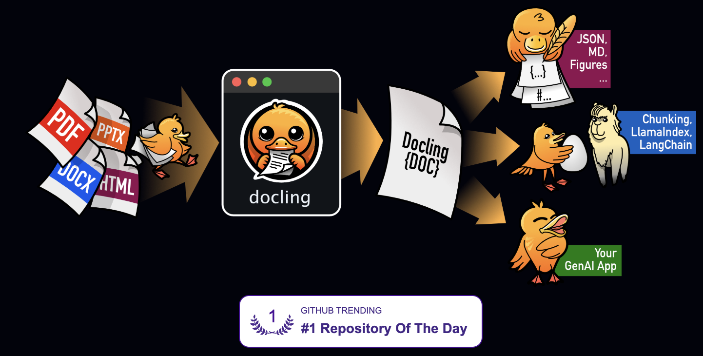

Bookchat: RAG app with Docling using a local Mistral model from Ollama
BookChat is an interactive command-line tool that allows you to ask questions about the content of a PDF book. It leverages document processing, text chunking, semantic embeddings, and a local language model to provide accurate answers based on the book's content.
Overview
I have recently seen an AI tutor application from Zen van Riel on YouTube where he presented the capabilities of the Docling tool from IBM. I was impressed by the application and I wanted to try and build something similar. This project is my attempt to try out and familiarize with Docling. Docling is a document processing/parsing tool that was released by IBM. It is known to integrate seamlessly with Generative AI workflows therefore I wanted to try it to transform pdf documents into markdown.
Docling (IBM) "nom nom noms" documents otherwise difficult to read with LLMs into more accessible formats
Large Language Models can read through text files but in my experience they are most performant reading Markdown format. However parsing documents, especially in pdf format can be challenging; especially for tables and schematics in technical documents.
In this project, I wanted to test it out by following the instructions on the RAG with LangChain example in the official documentation.
Since I am too poor to pay for API calls to big foundational models, I am using a localhosted Mistral 7b model from Ollama.
Ollama is the best way to try out LLM applications. You can experiment with lightweight models in a try-error manner without expensive mistakes.

You can check out Ollama at their official website
The Mistral 7b model can be pulled directly from Ollama. It is a light-weight (~4GB) but extremely capable model that I like very much.

Screenshot from the official Mistral AI website showing off the benchmark performances of the Mistral 7b model. To date (and in my humble opinion), it is the best 7b model out there.
In the app, the Mistral 7b is used as the conversational LLM model that answers the user's questions. The final app in this project is called bookchat and it allows to chat with books (or other documents).Key Features
Here are the main features:
- Feature one: Using Docling, the app converts a document into Markdown format (the document has to be a pdf). Once the conversion is completed the markdown is embedded into a vector database (so you don't have to perform the conversion each time)
- Feature two: The app uses a local LLM through Ollama. Therefore the whole process is free, localhosted and 100% compatible with confidential documents.
- A opensource model from Hugging Face is used for embeddings. Which is also free.
Technical Implementation
The process uses five steps.
class DoclingBookLoader(BaseLoader):
def __init__(self, file_path: str) -> None:
self.file_path = file_path
accelerator_options = AcceleratorOptions(
num_threads=8, device=AcceleratorDevice.AUTO
)
pipeline_options = PdfPipelineOptions()
pipeline_options.accelerator_options = accelerator_options
pipeline_options.do_ocr = True
pipeline_options.do_table_structure = True
pipeline_options.table_structure_options.do_cell_matching = True
self.converter = DocumentConverter(
format_options={
InputFormat.PDF: PdfFormatOption(
pipeline_options=pipeline_options,
)
}
)The code above shows the document loading pipeline. You can find the complete implementation in the GitHub repository.
def create_book_qa_system(pdf_path: str):
total_start_time = time.time()
print("\n🚀 Initializing Book QA System...")
index_path = f"{pdf_path}_faiss_index"
print("🔤 Initializing embedding model...")
embedding_start = time.time()
embeddings = HuggingFaceEmbeddings(
model_name="sentence-transformers/all-MiniLM-L6-v2"
)
embedding_init_time = time.time() - embedding_start
print(f"✅ Embedding model initialized in {embedding_init_time:.2f} seconds")
if os.path.exists(index_path):
print("📦 Loading existing vector store...")
load_start = time.time()
vectorstore = FAISS.load_local(
index_path, embeddings, allow_dangerous_deserialization=True
)
load_time = time.time() - load_start
print(f"✅ Vector store loaded in {load_time:.2f} seconds")
else:
print("\n💫 No existing index found. Creating new one...")
loader = DoclingBookLoader(pdf_path)
documents = loader.load()
print("\n📄 Splitting document into chunks...")
split_start = time.time()
text_splitter = RecursiveCharacterTextSplitter(
chunk_size=1000, chunk_overlap=200, separators=["\n\n", "\n", " ", ""]
)
splits = text_splitter.split_documents(documents)
split_time = time.time() - split_start
print(f"✅ Created {len(splits)} chunks in {split_time:.2f} seconds")
print("\n📦 Building vector store and creating embeddings...")
vectorstore_start = time.time()
vectorstore = FAISS.from_documents(splits, embeddings)
vectorstore_time = time.time() - vectorstore_start
print(f"✅ Vector store built in {vectorstore_time:.2f} seconds")
print(f"💾 Saving vector store to {index_path}")
save_start = time.time()
vectorstore.save_local(index_path)
save_time = time.time() - save_start
print(f"✅ Vector store saved in {save_time:.2f} seconds")
retriever = vectorstore.as_retriever(search_type="mmr", search_kwargs={"k": 5})
print("✅ Vector store ready")
print("\n🤖 Connecting to local language model...")
llm = ChatOllama(
model="mistral:latest",
temperature=0)
print("⛓️ Creating QA chain...")
template = """You are a helpful assistant answering questions about the book: {book_name}.
Use the following context to answer the question: {context}
Question: {question}
Answer the question accurately and concisely based on the context provided."""
prompt = PromptTemplate(
input_variables=["book_name", "context", "question"], template=template
)
qa_chain = ConversationalRetrievalChain.from_llm(
llm=llm,
retriever=retriever,
return_source_documents=True,
combine_docs_chain_kwargs={
"prompt": prompt,
"document_variable_name": "context",
},
)
total_time = time.time() - total_start_time
print(f"\n✨ System ready! Total setup took {total_time:.2f} seconds")
return qa_chain
The code above shows the embedding and Q&A implementation.
Screenshot from the app after the document injestion is complete and the app prompts the user to ask a question

Screenshot from the app. In this demo the book "CSS for Dummies" was injested. The user asked the question "How can I center a div?" and the Mistral 7b model returns the chunks where this information is found and gives a curated answer.
Technologies Used
The project was built using the following technologies:
- Python 3.11 - Core programming language
- LangChain - Web framework
- Docling - Document parsing
- Ollama - LLM model provider
- Hugging Face - Embedding model provider
Future Improvements
Potential enhancements for future versions:
- For the embeddings model, I would like to try and use a more powerful model that is not limited to 32000 tokens. This is especially useful for large books and documents.
- In its actual state the app runs only in the Terminal. It could be interesting to add a user interface like Streamlit to the app so that it can be used in a more user-friendly way.
- Currently the app only supports pdf documents. It could be interesting to add support for other document formats like word, excel, powerpoint etc.
- My next challenge will be to serve this application in a web environment. Dockerizing the app would make it more portable and easier to deploy but 2 separate containers are needed (one for the app and one for the LLM (Ollama)).
Conclusion
This was overall an interesting project to try out Docling and to build a RAG application with a local LLM. I am happy with the results and I am looking forward to improving the app in the future. Check out Zen van Riel's community hub, he has a lot of very cool examples and overall he explains AI conceprs very well.